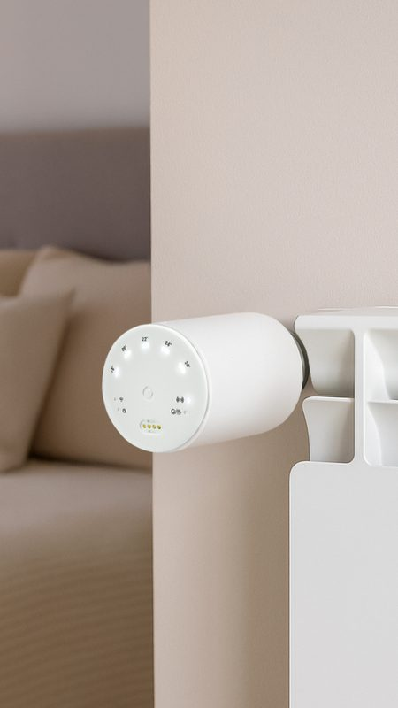
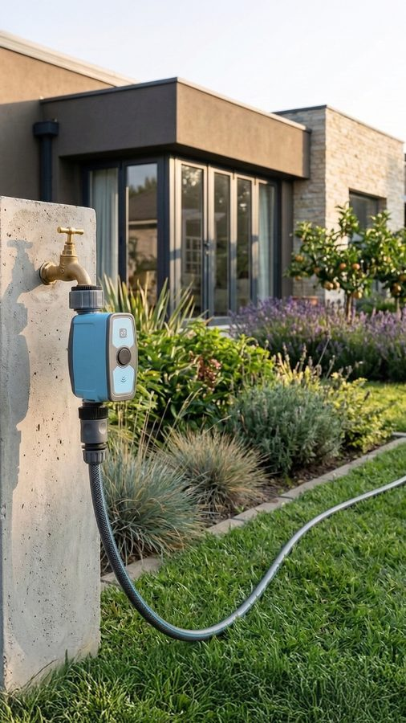
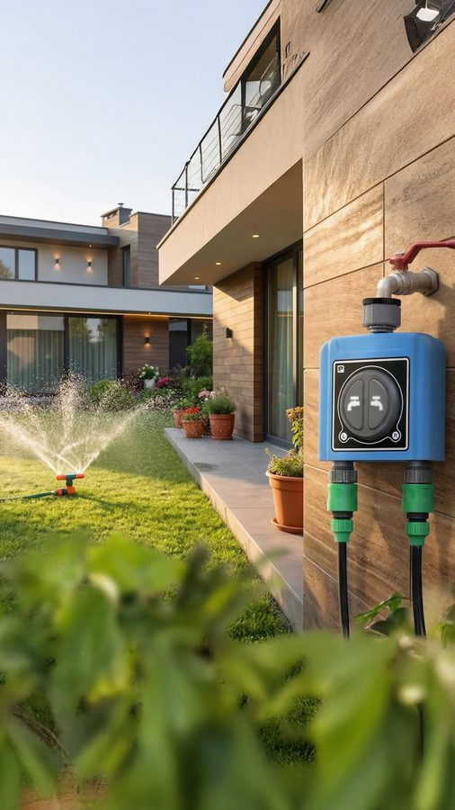

No adivinamos qué publicar. Usamos inteligencia de datos e IA para detectar lo que viene antes de que explote. Diseñamos contenido que el algoritmo quiere mostrar.
Cada pieza que publicamos pasa por un proceso de inteligencia de datos. No creamos nada al azar.
Nuestros sistemas de IA rastrean miles de señales en tu sector: búsquedas, conversaciones, engagement. Detectamos qué temas están ganando tracción antes de que lleguen al mainstream.
Cada pieza se diseña sobre datos de retención, engagement y comportamiento del algoritmo. El formato, la duración, el hook, todo está optimizado para que funcione, no solo para que quede bonito.
El timing importa tanto como el contenido. Analizamos cuándo tu audiencia está más receptiva y cuándo la tendencia está a punto de explotar. Publicamos ahí, no antes ni después.
Cada lunes te llega un briefing con los 3 temas que van a explotar esa semana en tu sector. No lo que ya está petando — lo que todavía no está. Para cuando tu competencia lo publique, tú ya tienes el contenido hecho.
Sabemos en qué segundo exacto la gente abandona un Reel. Sabemos qué hook retiene más en cada plataforma. Producimos con eso encima de la mesa, no solo con creatividad.
No hay "mejor hora para publicar" universal. La tuya depende de tu audiencia, tu sector y lo que el algoritmo esté priorizando ahora. Te damos un calendario basado en esos datos, no en plantillas genéricas.
Después de cada mes sabemos qué formato te funciona, qué copy convierte y qué temas generan guardados vs. comentarios. Eso no se improvisa — se construye iterando.
Necesitas crecer rápido y cada euro cuenta. Te ayudamos a crear contenido que genere alcance orgánico real, sin quemar presupuesto en ads.
Tu competencia ya usa datos para crear contenido. Si sigues publicando por intuición, estás perdiendo terreno cada día que pasa.
Contenido que posiciona tus productos justo cuando la demanda empieza a subir. Llega antes que tu competencia al siguiente trend.
Creadores, consultores, speakers. Te posicionamos como la voz de referencia en tu nicho con contenido que llega en el momento justo.
Las agencias tradicionales crean contenido basándose en intuición y tendencias que ya pasaron. Nosotros usamos datos en tiempo real para anticipar lo que viene.
Probabilidad de acertar con el contenido
TRABAJO REAL

Vídeo
Producto
UGCCombinamos herramientas de análisis de tendencias (Google Trends, Helium10, social listening) con modelos de IA propios que correlacionan señales de búsqueda, engagement y conversación para predecir qué temas van a explotar en los próximos días.
Sí. Las tendencias se mueven por los mismos patrones independientemente del sector. Hemos trabajado con marcas de consumo, tecnología, formación y servicios profesionales. Lo que cambia son las fuentes de datos que monitorizamos.
El primer mes calibramos el sistema con tu sector y audiencia. A partir del segundo mes empiezas a ver diferencias medibles en alcance y engagement. En el tercero, el efecto acumulado se nota en métricas de negocio.
Podemos ser tu equipo completo o complementar al que ya tienes. Muchos clientes usan nuestra inteligencia de tendencias para alimentar a su equipo interno con datos que antes no tenían.
Depende del alcance. Tenemos desde un servicio de inteligencia de tendencias puro (sin producción) hasta paquetes completos de estrategia + producción + publicación. Agenda una llamada y dimensionamos según tu caso.
Cuéntanos tu proyecto en 2 minutos. Te respondemos con un mini-análisis de tendencias de tu sector gratis.
Sin compromiso. Sin PowerPoints de 40 páginas. Solo datos.